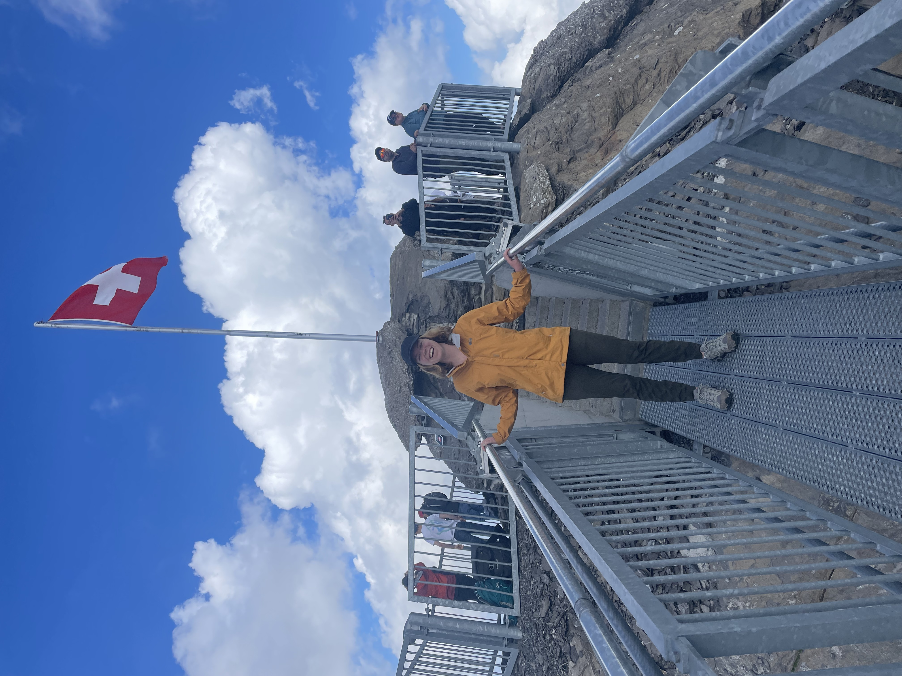

I am excited about the interdisciplinary research that takes place at the intersection of Biology and Computer Science. Answering complex biological questions requires approaching problems from many angles and perspectives.
Since starting my PhD in the CMU-Pitt Program in Computational Biology in August 2019, I have joined the Camacho Lab in the Department of Computational and Systems Biology at the University of Pittsburgh. My research interests are in Structural Biology particularly how protein interaction and miss-interaction leads to disease progression. In September 2021 I proposed my dissertation "Modulation of Protein Interactions" and became a PhD candidate. Since then I have presented my work both locally and interrnationally and am working on getting it all published! I am also actively looking for summer internships in the computational drug discovery space for summer 2023.
I received a BA in Chemistry from Skidmore College in 2019. At Skidmore, I gained my first research experience working with Professor Lia Ball where we used molecular dynamics simulations to study the binding path of intrinsically disordered peptides. With Professor Ball's guidance I published my first, first author publication shortly after graduating! We used molecular dynamics and NMR experiments to show that a disordered encounter complex is central to the binding of a yeast protein to an SH3 domain.
My long term goal is to use computational tools to increase understanding of disease progression driven by protein-protein interactions. In particular through my PhD I hope to build a system agnostic tool set which enables me to explore a wide range of biological questions.
At the Gordon Research Conference for Intrinsically Disordered Proteins on Glacier 3000!
Since arriving in Pittsburgh, I have sought opportunities to share science and computational biology with a wider audience as well as methods to increase diversity, equity, and inclusion in the field. For the past three summers I have been the graduate student advisor to the TECBio REU, where I moderated an ethics forum, a graduate student panel, and a weekly journal club. I have also worked with the Hillman Academy and judged a virtual science fair.
When I am not working on research I enjoy spending time outside: skiing, hiking, biking, and riding horses. During graduate school I have started rock climbing and backpacking. I also enjoy cooking, baking (because hobbies that lead to snacks are the best kind), and reading novels.
working to get the work of the first two aims of my dissertation published! I am also working out my plans to attend the Algorithms in Structural Bioinformatics winter school in Cargese, Corsica France and the 2023 Biophysical Society Meeting!